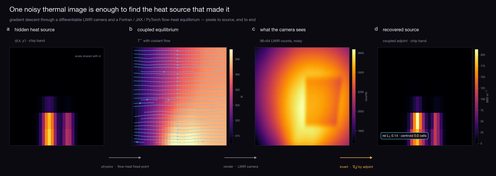
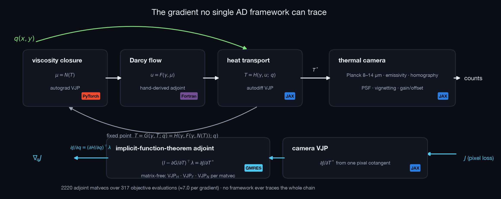
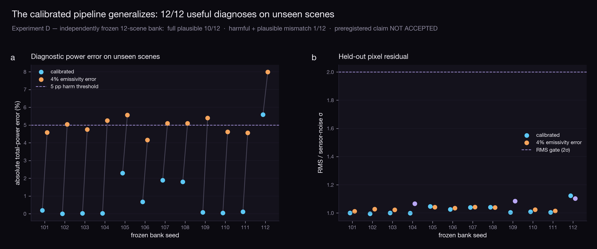
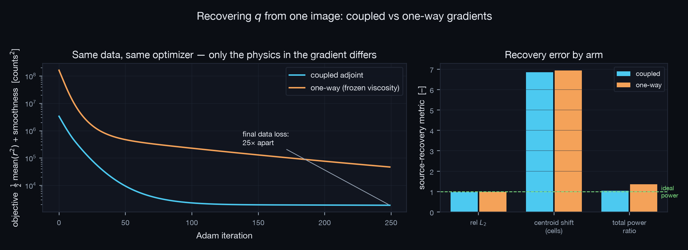
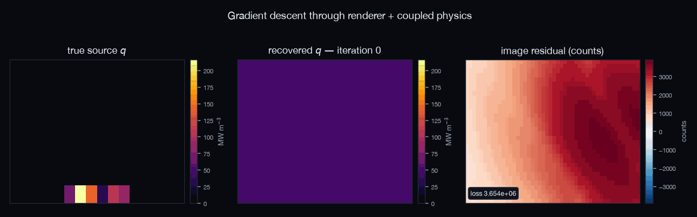
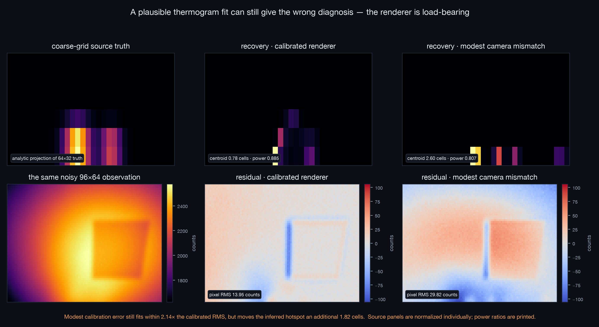
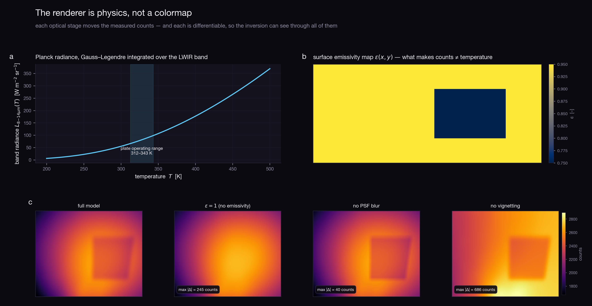

A thermal camera never sees temperature — it sees band-integrated Planck radiance through emissivity, optics, and a sensor. We built that camera as a differentiable JAX Tesseract and welded it to a coupled Fortran / JAX / PyTorch cold-plate equilibrium. Then we asked one noisy rendered frame a question no framework can answer alone: which part of the chip is overheating? The gradient that answers it runs from pixels, back through the renderer, through an implicit-function-theorem adjoint spanning three native derivative regimes and hand-written Fortran, to the volumetric heat source.

The temperature field solves a fixed point spanning a PyTorch viscosity closure, a Fortran Darcy solver with a pen-and-paper adjoint, and a JAX heat-transport model. The camera renders that equilibrium to counts. Differentiating the composition uses only each component's VJP endpoint: GMRES solves the adjoint system matrix-free, one three-component VJP chain per matvec, then one heat-transport VJP lands the gradient on q. A separate receipt builds and serves all four images, then verifies the complete derivative through real HTTP/container boundaries at 1.1e-07 relative error.

Twelve fault scenes stayed sealed until the method, two-view training, held-out third view, absolute pixel gate, and 4% emissivity mismatch were fixed. Truth runs at 64×32 and inversion at 32×16. The calibrated arm is operationally useful on 12/12 scenes and passes every held-out residual check on 10/12. Median held-out RMS is 2.014 counts at a 2-count noise floor; median centroid error is 0.088 mm.
A fixed 4% emissivity underestimate increases absolute total-power error on 12/12 paired scenes. The median increase is 4.42 percentage points (deterministic paired-bootstrap 95% interval 3.28–4.88). The preregistered stronger claim is not accepted: only 1/12, short of 6/12, were both independently plausible and at least five points harmful. No scene or failed arm is excluded.

Two recoveries share data, prior, optimizer, and budget. The second uses a deliberately simplified frozen-viscosity forward model and its matching derivative; the comparison therefore measures model mismatch, not a gradient-only intervention.
| metric | coupled adjoint | one-way |
|---|---|---|
| relative L2 error of q̂ | 0.137 | 0.246 |
| peak amplitude ratio (1 = ideal) | 1.115 | 1.098 |
| centroid shift [cells] | 0.02 | 0.17 |
| total recovered power ratio (1 = ideal) | 1.000 | 1.017 |
| final data loss [counts²] | 2.02 | 3.34 |
| adjoint GMRES matvecs | 2220 | 0 |
Grid 32×16 plate, 96×64 sensor, σnoise = 2.0 counts, seeds pinned; protocol committed before the run (writeup/PROTOCOL.md). Declared criterion: coupled rel_l2 < 0.5 and centroid shift < 1.5 cells (PROTOCOL.md Amendment v2, declared before this run) — met: True. Both arms reached the declared 250-iteration limit, so the table reports budget-matched endpoints rather than convergence floors.
Factorial mechanism check. Experiment E keeps the coupled forward values but drops only the implicit feedback term in reverse. Source L2 becomes 0.241, versus 0.137 with the exact implicit adjoint and 0.246 with frozen forward physics. Data loss is 2.079, between exact-coupled 2.022 and frozen-forward 3.339. This separates the effects: forward fidelity dominates pixel fit; exact gradient fidelity improves the inferred source shape.


Experiment C removes the same-grid inverse crime: observations come from a 64×32 coupled solve and inversion runs at 32×16. With the calibrated renderer, centroid error is 0.78 cells. A modest camera mismatch (PSF 0.9 vs 1.2 px, gain +5%, offset +10 counts, ambient +3 K, and a small FOV error) still fits within 2.14× the calibrated RMS, but moves the inferred hotspot an additional 1.82 cells. Both fits remain far above the 2-count noise scale, so this is calibration-sensitivity evidence, not a plausible-fit claim.
The result is deliberately mixed: blackbody and no-vignetting models are visibly rejectable, while removing PSF blur does not worsen localization and improves coarse-grid source L2. The evidence supports calibration sensitivity, not a claim that every renderer stage is indispensable.

Planck spectral radiance integrated over the 8–14 μm LWIR band by Gauss–Legendre quadrature, grey-body emission plus reflected ambient (Kirchhoff), a sensor-to-plate homography with differentiable bilinear sampling, a Gaussian PSF whose width is itself a parameter, cos4 vignetting, then gain and offset to digital counts. Every stage moves the measured image; every stage is differentiable. Experiment A tests single-frame calibration and exposes its identifiability limit: gain is within 0.2% at zero noise, but emissivity RMSE remains 0.101 and PSF/offset are not recovered.
